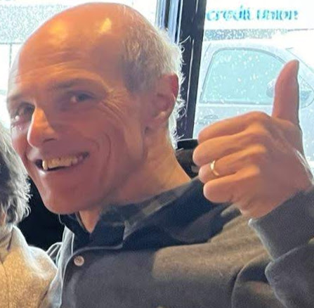
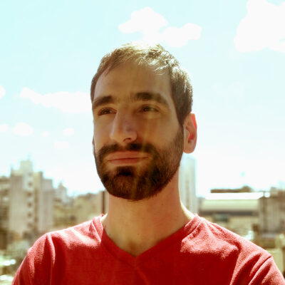
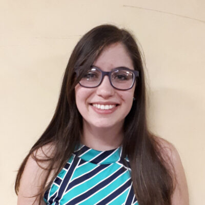
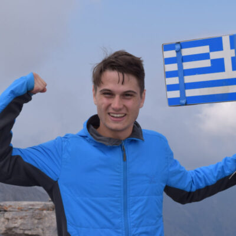
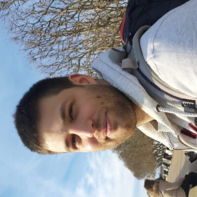
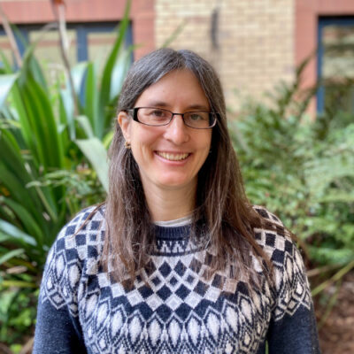
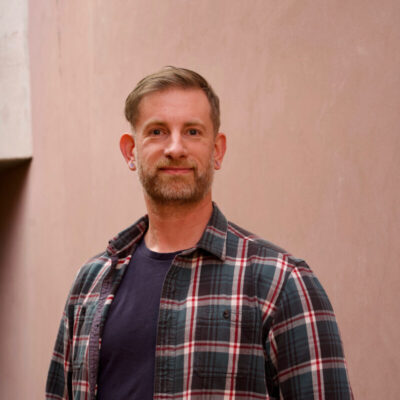
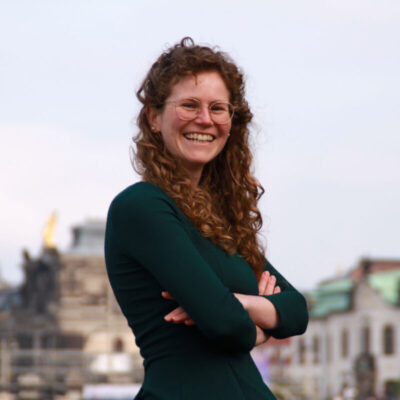

Participants
R Core Team

Tomas Kalibera
R Core
Michael Lawrence
Genentech

Martin Mächler
ETH Zurich
Sebastian Meyer
Friedrich-Alexander-Universität Erlangen-Nürnberg


Paul Murrell
The University of Auckland

Luke Tierney
University of Iowa
R Contributors
Lorena Abad
University of Salzburg
Ekaterina Akimova
LIMCR, Salzburg Cancer Research Institute
Abraham Azar
Impact Initiatives
Gabe Becker
Independent Consultant
Henrik Bengtsson
University of California San Francisco
Kelly Nicole Bodwin
California Polytechnic State University

Elio Campitelli
Monash University

Dianne Cook
Monash University

Paola Corrales
R-Ladies
Gergely Daroczi
Rx Studio

Sebastian Fischer
LMU Munich
Hannah Frick
Posit
Charlie Gao
Hibiki AI Limited

Hugo Gruson
data.org
Lionel Henry
Posit
Binod Jung Bogati
R User Group Nepal
Fonti Kar
University Of New South Wales
Ella Kaye
University of Warwick
Jayani P.G. Lakshika
Monash University
Kirill Müller
cynkra GmbH
Hanne Oberman
Utrecht University

Reiko Okamoto
Bruyère Research Institute

Edzer Pebesma
Universität Münster
Shannon Pileggi
The Prostate Cancer Clinical Trials Consortium
Lluís Revilla
IrsiCaixa
Daniel Sabanés Bové
RCONIS
George Stagg
Posit
Brian Terry
University of Warwick/Open University
Konstantin Emil Thiel
Paracelsus Medical University Salzburg

Heather Turner
University of Warwick

Abhishek Ulayil
Institute of Actuaries of India
Davis Vaughan
Posit

Hadley Wickham
Posit

Sarah Zeller
TU Dresden